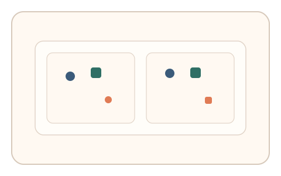
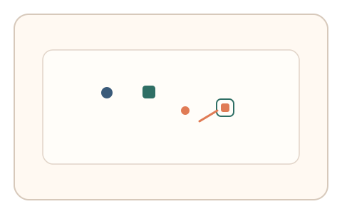
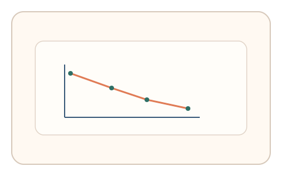

#25
视觉思考范式：空间/结构/直觉
已扩展
变化盲视检测
利用变化发现的延迟曲线与变化尺度关系验证真实性。
概念原文
两幅近似图形快速交替，用户发现变化后点击位置；系统评估发现时间分布与变化尺度的关系。
用“发现延迟曲线”而不是“是否找到”作为判定依据。
研究背景
变化盲视表明人类对场景变化的检测存在显著延迟，且延迟与变化规模、位置与干扰程度相关。通过测量发现时间分布可形成稳定的行为特征，而非单纯依赖是否找到。
核心机制
- 两幅近似图形快速交替呈现。
- 用户发现变化后点击变化位置。
- 记录发现时间与点击位置误差。
- 分析发现时间与变化尺度的关系。
用户流程
- 步骤 1：用户看到交替闪烁的场景。
- 步骤 2：用户发现变化并点击位置。
- 步骤 3：系统拟合延迟曲线并判定。
判定信号
发现时间与变化尺度的曲线
人类变化检测存在稳定的延迟曲线。
搜索轨迹与点击误差
真实搜索会出现逐步定位与局部停顿。
判定逻辑
综合发现时间曲线与搜索轨迹特征，要求与人类统计范围一致；极端快速或无规律波动判异常。
对抗面
- 脚本对两帧做像素差检测
- 重放真实用户的发现序列
防御与缓解
- 随机化变化位置、大小与出现节奏
- 加入局部噪声与轻微位移干扰差分检测
- 叠加鼠标轨迹与停顿分布进行多信号判定
可达性与风险
提供低闪烁频率或替代模式，并允许键盘选择变化区域，避免对光敏或注意力受限用户不友好。
- 频繁闪烁可能引起视觉疲劳
- 环境光线与屏幕刷新率影响延迟测量
可视化状态

状态 1：交替场景
两幅近似图形快速切换。

状态 2：变化定位
用户发现变化并点击。

状态 3：延迟曲线
拟合变化尺度与发现时间关系。
参考资料
Change blindness
说明变化盲视的基本现象与机制。
Attention
说明注意力限制对变化检测的影响。